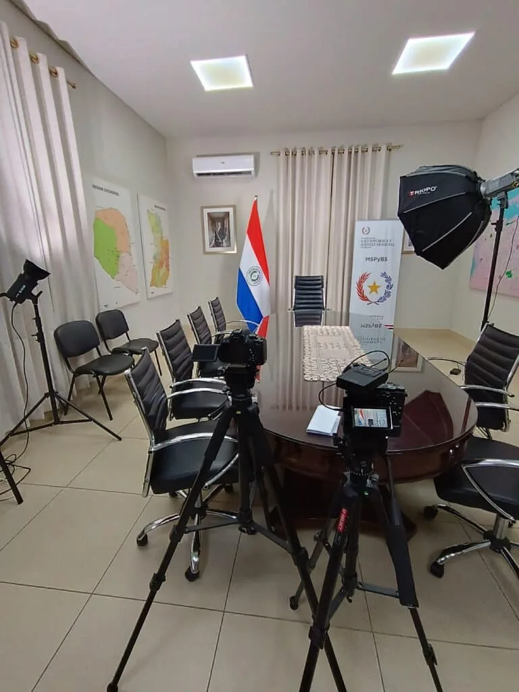

Operationally ready production support for real-world filming conditions.
Production Capabilities
Maite Media supports productions in Paraguay with capability shaped around execution environments, production setups, field conditions, and the practical demands of corporate, event, live, and institutional work.
Capability should answer practical questions
The real question is not simply what equipment is available. It is whether Maite Media can operate effectively in the kinds of environments where production actually happens: executive interviews, live venues, institutional visits, field days, and fast-moving on-site setups.
Execution environments Maite Media is built to support
- Corporate offices and executive environments
- Conferences and live event venues
- Institutional or public-facing settings
- Field-based locations with less control
- Interview setups that require speed and professionalism
- Productions where aerial capture supports the broader visual plan
Production setups should follow the real working conditions
Depending on the brief, projects may require executive interview setups, multi-camera event coverage, live streaming coordination, hybrid event support, field production planning, modular content capture, or drone-supported shooting integrated into a broader production day.

Why operational readiness matters
Agencies, production companies, and in-house teams often review capability because they want reassurance before production starts and because they need confidence that the work will hold up under real operating conditions.
Buyers need to know the work can hold up under real conditions
Capability reduces uncertainty before the shoot and supports better decision-making during procurement. It helps buyers understand whether the partner can handle the format, the environment, and the working reality of the project.
Frequently asked questions
Is this page about gear or operational capability?
It is about operational capability: execution environments, production setups, and readiness under real conditions.
Can you support live, multi-camera, and field-based productions?
Yes. Those production models are part of the capability framework this page is designed to support.
Do you adapt setups to different environments?
Yes. Capability is defined here as the ability to adapt the setup and workflow to the situation.
How does this page support agency and production company buyers?
It gives buyers a clearer trust layer around whether the production partner can support the format and operating conditions they need.
Need to confirm production capability for a project in Paraguay?
Tell us the production format, environment, and technical expectations. We will help define the right execution model.